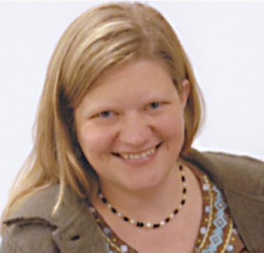

About Sarah Proechel, CPM
I attended my first birth in 1981, at the age of 12, when my sister gave birth to her first baby. Seeing my niece make her way into the world was the most awe-inspiring experience for me as I realized for the first time what a miracle it is that we are here. I still see birth as a miracle and life itself as a precious gift.
Education and Experience:
At the age of 19, I discovered midwifery and knew that I was called to work with birthing women. For two years I lived and traveled in Central and South America where I met and interviewed many traditional midwives and also interned in two hospital maternity units. In 1993 I trained and began working as a doula and started my own family.
In 1997 I began my midwifery education with the MMA (Massachusetts Midwives' Alliance) midwifery studies program. I have also studied at Seattle Midwifery School and I have apprenticed with two homebirth practices, have been a student midwife at a birth center in El Paso, Texas, and have been a midwife intern at a hospital in Jamaica. I have also completed an apprenticeship program in herbal medicine with Rosemary Gladstar.
In 2004 I graduated from Goddard College with a degree in Health Arts and Sciences and completed an original field research project in Guatemala on traditional Maya midwives. For more information or to order the book, see www.lulu.com/mayamidwives
I have been helping women in birth since 1988. Since 2005 I have served the Berkshires and nearby areas as a homebirth midwife.
I live in Hillsdale, New York with my husband and life partner of over 20 years and my three lovely boys, who help keep me grounded.